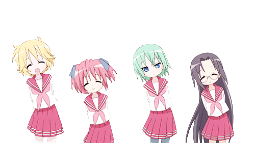

Hello, my name is Oswaldo, a full-time student. I have 24 years old. I came from El Salvador on Jan-15-2018. I study System and Computer Engineering via online, I know it’s weird but when I’ll finish, I hope to validate my career here and get more jobs opportunities. I love living here because the weather is colder than at my country. I started programming 9 years ago and I was happy when I created my first application, then my brother tested how it was working. My hobby is about watching anime, yes it’s embarrassing but I like that since it entertains me and takes me out of the real world and away from all the stress of studying. I believe all people have seen anime before for example: Dragon Ball, Full Metal Alchemist, One Piece, etc. So if you had never watched anime before, you should try looking for one because it’s amazing and funny, well sometimes.
What is anime? Anime is, put simply, Japanese animation. It is when a Japanese artist animates things into a storyline, basically like any other cartoon movie but Japanese style. Don’t go calling anime cartoon though. Cartoon has become synonymous with American animation and anime is too distinct to be called a cartoon. If you’re in the mood for an adventure with different themes like maturation, characterization, and bits of tragedy, Narutoand One Piece is for you. If you prefer a lighter science fiction adventure, Cowboy Bebop is a nice anime to get into. Forget space, maybe you want a light adventure on land where each episode is a self-contained story, maybe Kino’s Journey is the best choice. Or, perhaps you’re more of a dark fantasy type with major elements of tragedy, in which case Attack on Titanis perfect. Do you like the drama of philosophy, war and conspiracy? Fullmetal Alchemist: Brotherhood is for you by far, and Code Geass for those who want a war of smarts and attrition at once. Maybe you hate adventure. What if you prefer the serious stuff like crime and investigation? Death Note is the better choice. Or perhaps you want Thriller, in which case Another is the perfect anime to start with. Perhaps someone doesn’t want any serious stuff and they prefer romance. Well, Chuunibyou, Love and Other Delusions is a good romantic anime to start with. A brief introduction to anime (In Japan, the word is used to refer to all animation).
Well, there you have it. Recommendations are set, a clear pathway charted. Where the road takes you is up to you. Anime can go to a bunch of different places, in some cases, from the beginning, you’d never guess where an anime’s storyline can take you and you’ll never guess where your anime journey can take you. The cool thing about anime is it has something in its style of animation that appeals to everyone. The animators of Japan give it heart. More time goes into hand-drawn animation and so, animators prefer to spend that time doing something they genuinely enjoy rather than something to make big bucks. This leads to something many different types can enjoy. Even a cynical adult can enjoy Death Note because of its type of storyline. Once you’ve watched your first anime adhering to your own tastes, you are ready to go down a specific path, a path of your choosing. Don’t let a single bad anime discourage you but be careful. Read reviews and recommendations and synopses before watching and soon enough, anime will be another medium to get entertainment from. You can see a detailed anime list at these pages: Anilist and My Anime List. Watching then in Crunchyroll and HIDIVE
(My Hobby Page)
